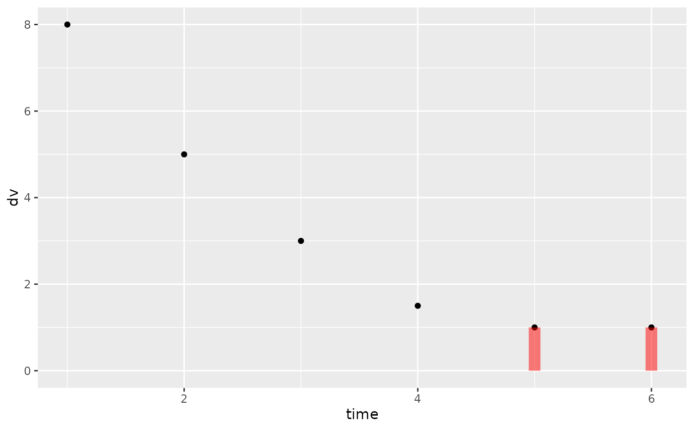

This is a censoring geom that shows the left or right censoring specified in the nlmixr input data-set or fit
Usage
stat_cens(
mapping = NULL,
data = NULL,
position = "identity",
show.legend = NA,
inherit.aes = TRUE,
width = 0.01,
...
)
geom_cens(
mapping = NULL,
data = NULL,
position = "identity",
show.legend = NA,
inherit.aes = TRUE,
width = 0.01,
...
)Arguments
- mapping
Set of aesthetic mappings created by
aes(). If specified andinherit.aes = TRUE(the default), it is combined with the default mapping at the top level of the plot. You must supplymappingif there is no plot mapping.- data
The data to be displayed in this layer. There are three options:
If
NULL, the default, the data is inherited from the plot data as specified in the call toggplot().A
data.frame, or other object, will override the plot data. All objects will be fortified to produce a data frame. Seefortify()for which variables will be created.A
functionwill be called with a single argument, the plot data. The return value must be adata.frame, and will be used as the layer data. Afunctioncan be created from aformula(e.g.~ head(.x, 10)).- position
A position adjustment to use on the data for this layer. This can be used in various ways, including to prevent overplotting and improving the display. The
positionargument accepts the following:The result of calling a position function, such as
position_jitter(). This method allows for passing extra arguments to the position.A string naming the position adjustment. To give the position as a string, strip the function name of the
position_prefix. For example, to useposition_jitter(), give the position as"jitter".For more information and other ways to specify the position, see the layer position documentation.
- show.legend
logical. Should this layer be included in the legends?
NA, the default, includes if any aesthetics are mapped.FALSEnever includes, andTRUEalways includes. It can also be a named logical vector to finely select the aesthetics to display. To include legend keys for all levels, even when no data exists, useTRUE. IfNA, all levels are shown in legend, but unobserved levels are omitted.- inherit.aes
If
FALSE, overrides the default aesthetics, rather than combining with them. This is most useful for helper functions that define both data and aesthetics and shouldn't inherit behaviour from the default plot specification, e.g.annotation_borders().- width
represents the width (in \ censoring box
- ...
Other arguments passed on to
layer()'sparamsargument. These arguments broadly fall into one of 4 categories below. Notably, further arguments to thepositionargument, or aesthetics that are required can not be passed through.... Unknown arguments that are not part of the 4 categories below are ignored.Static aesthetics that are not mapped to a scale, but are at a fixed value and apply to the layer as a whole. For example,
colour = "red"orlinewidth = 3. The geom's documentation has an Aesthetics section that lists the available options. The 'required' aesthetics cannot be passed on to theparams. Please note that while passing unmapped aesthetics as vectors is technically possible, the order and required length is not guaranteed to be parallel to the input data.When constructing a layer using a
stat_*()function, the...argument can be used to pass on parameters to thegeompart of the layer. An example of this isstat_density(geom = "area", outline.type = "both"). The geom's documentation lists which parameters it can accept.Inversely, when constructing a layer using a
geom_*()function, the...argument can be used to pass on parameters to thestatpart of the layer. An example of this isgeom_area(stat = "density", adjust = 0.5). The stat's documentation lists which parameters it can accept.The
key_glyphargument oflayer()may also be passed on through.... This can be one of the functions described as key glyphs, to change the display of the layer in the legend.
Details
Requires the following aesthetics:
xrepresents the independent variable, often the time scaleyrepresents the dependent variable
Plus exactly one of these aesthetic forms (the two forms cannot be mixed):
loweranduppergive the lower and upper bounds of the censoring interval directly. Both must be supplied. Use-Inf/Inffor an unbounded side; useNAon both for observed (non-censored) rows.cens(with optionallimit) gives the censoring indicator (-1right censored,0not censored,1left censored) and, whenlimitis also supplied, the associated limit value. Internally converted tolower/upper.
Will add boxes representing the areas of the fit that were censored.
See also
Other rxode2 plotting:
is.rxStackData(),
plot.rxSolve(),
rxStack(),
rxTheme(),
stat_amt()
Examples
# the last two observations are below the limit of quantification (1)
d <- data.frame(
time = 1:6,
dv = c(8, 5, 3, 1.5, 1, 1),
cens = c(0, 0, 0, 0, 1, 1),
limit = c(NA, NA, NA, NA, 0, 0)
)
ggplot2::ggplot(d, ggplot2::aes(time, dv, cens = cens, limit = limit)) +
ggplot2::geom_point() +
geom_cens()
#> Warning: Using the `size` aesthetic in this geom was deprecated in ggplot2 3.4.0.
#> ℹ Please use `linewidth` in the `default_aes` field and elsewhere instead.
